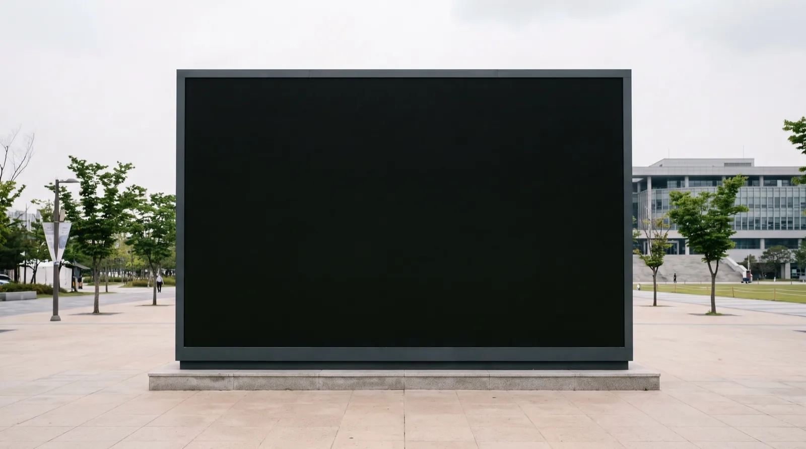
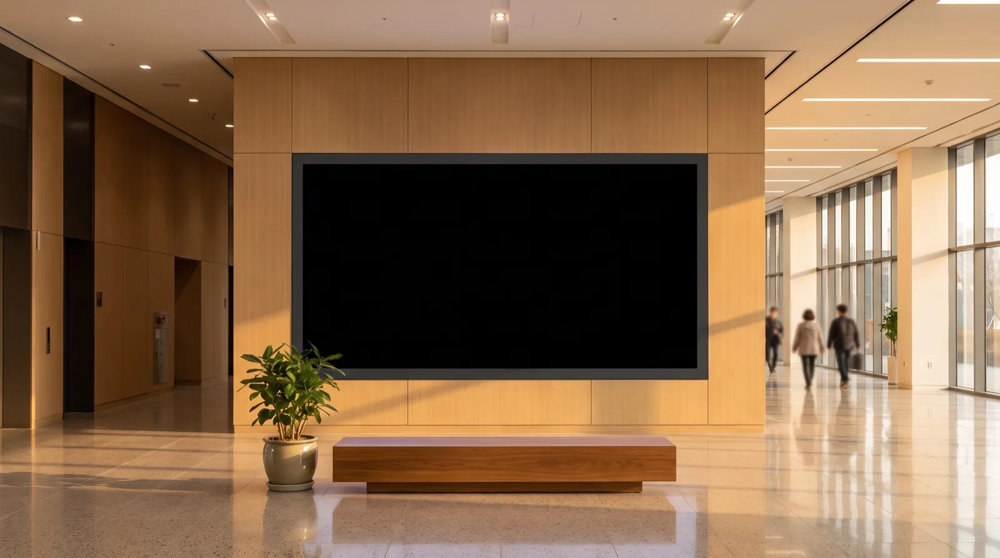

Standard · 맥미니 M4
로비 미디어월·정보게시대 표준 사양.
대구 실시간 정보를 불러오는 중
관공서 LED 화면에 미디어아트를 공급합니다.
하드웨어부터 콘텐츠, 원격 관리까지 한 곳에서.


① 데이터 연동 아트는 기관이 가진 DB·공공 API를 화면으로 바꾸고, ② 미디어아트는 기관의 정체성을 감각적으로 연출합니다. 두 화면 모두 지금 실제 대구 데이터로 재생 중입니다.
Weather Interactive
기온·바람·구름·강수를 읽어 시침과 초침, 꽃잎의 궤도를 다시 그립니다. 같은 화면이 어제와 오늘 다르게 보입니다.
대구의 하늘을 읽는 중
대구의 오늘 날씨와 현재 시각이 시침, 초침, 꽃잎의 궤도를 바꿉니다.
Hardware
패널 뒤에 붙어 콘텐츠를 자동 재생하는 전용 셋톱박스. 세팅을 마친 상태로 납품합니다.
장비만 보내드리지 않습니다. 기관 화면 규격에 맞춘 콘텐츠, 공공 API 연동, 관제 서버 등록까지 마친 상태로 납품하고, 설치 이후에는 원격으로 관리합니다.
로비 미디어월·정보게시대 표준 사양.
키오스크·소형 패널. 대량 배치 시 원가 절감.
4K 미디어파사드·다중 화면 동기화.
여러 대를 한 화면에서 상태 확인·배포·리포트.
관제 프로그램 열기민원 처리 현황, 방문자 수, 프로그램 참여자, 에너지 사용량. 이미 가진 데이터를 화면의 움직임으로 바꿉니다.
기관 CI·컬러·서체 수령
공공 API·엑셀·내부 DB
1일 이내 제시
현장 원격 배포
Turnkey Service
시공업체·콘텐츠 외주·유지보수를 따로 찾을 필요 없이, 담당자는 창구 하나만 관리하면 됩니다.
벽면·시야거리·조도·전기 용량을 실측해 최적 패널 사양을 산정합니다.
패널 공급부터 구조 보강·배선·전원 계통까지 시공합니다.
미디어박스를 설치하고 관제 서버 연동까지 마쳐 인계합니다.
기관 디자인 가이드와 보유 DB를 반영한 전용 아트를 제작합니다.
이상을 자동 감지·복구하고 월간 리포트를 발행합니다.
Annual Integrated Package
하드웨어 + AI 콘텐츠 SaaS + 관제 서버를 한 계약으로 묶었습니다.
한 계약에 모두 포함됩니다
벽면 크기·화면 대수·기존 패널 유무에 따라 단가가 달라집니다. 기관명과 사이니지 대수를 남겨주시면 회계연도 기준 견적서와 직접생산확인증명서를 함께 보내드립니다.
Media Art Works
공공데이터를 빛, 꽃, 움직임으로 바꾸는 LED·사이니지·미디어월용 작품 예시입니다. 경북 경주와 안동처럼 지역 정체성이 강한 도시에는 관광·축제·하천 데이터를 결합한 별도 제안도 가능합니다.
경주 날씨, 일몰 시간, 강수확률, 야간관광 동선, QR 축제 참여 데이터를 별빛과 금빛 문양의 움직임으로 바꿉니다.
안동 풍속, 습도, 낙동강 수위, 공연 일정, 현장 설문 데이터를 한지 결, 물결, 탈춤 문양의 변화로 표현합니다.
아래 작품은 실제 사이니지에 송출되는 화면 그대로 전체 화면으로 열립니다. 브라우저에서 바로 확인하실 수 있습니다.
| 작품 | 연결 데이터 | 시민에게 보여주는 판단 | 적용 공간 | 설치 장비 |
|---|---|---|---|---|
| 오늘은 봄날 | 대구 날씨, 바람, 구름, 강수 | 오늘의 하늘과 현재 시각을 시침, 초침, 꽃잎, 빛의 움직임으로 표현 | 공공청사 로비, 미디어월, 야외 LED | 현장 송출용 미니 PC 권장 |
| 빛의 산책로 | 대구 미세먼지 API, 초미세먼지 지수 | 아이들이 공원에서 야외활동을 해도 되는지 색과 신호로 안내 | 공원, 학교 앞, 어린이 체험 공간 | 미니 PC 권장, 네트워크 연결 필요 |
| 숨 쉬는 정원 | 오늘 온도, 체감온도, 시간대별 변화 | 따뜻함과 추위를 꽃의 크기, 색온도, 호흡 속도로 시각화 | 도서관, 병원, 복지관, 웰니스 공간 | 4K 장시간 운영은 미니 PC 권장 |
| 도시의 꽃비 | 강수 확률, 강수량, 기상 예보 | 오늘 비가 올지 안 올지를 꽃비의 밀도와 하늘 변화로 표현 | 축제 미디어파사드, 광장, 관광 안내 공간 | 미니 PC 송출, 프로젝션/LED 현장 테스트 권장 |
Data-driven Proposal Tabs
공공기관이 보유하거나 공개 API로 연결할 수 있는 데이터를 작품의 조건으로 사용합니다. 각 제안은 LED, 사이니지, 미디어월, 키오스크 화면에 맞춰 커스텀 제작 가능합니다.
기온, 강수확률, 풍속, 하늘 상태를 꽃잎의 속도와 빛의 온도로 바꿉니다. 로비나 관광안내소에서 오늘의 도시 분위기를 직관적으로 보여줄 수 있습니다.
미세먼지, 초미세먼지, 오존, 체감온도를 조합해 아이들이 밖에서 놀아도 되는지 색과 움직임으로 안내합니다. 엄마의 시선이 가장 잘 드러나는 제안입니다.
하천 수위, 강수량, 홍수주의 정보를 물결의 높이와 속도로 표현합니다. 안전 안내와 감성적 도시 경관을 함께 만들 수 있습니다.
버스 도착, 보행량, 혼잡도 데이터를 선과 점의 흐름으로 시각화합니다. 대기 공간에서 도시가 움직이는 감각을 보여주는 사이니지로 제안할 수 있습니다.
공공청사의 태양광 발전량, 전력 사용량, 탄소 절감량을 꽃의 개화와 빛의 밝기로 보여줍니다. ESG 캠페인과 함께 운영하기 좋습니다.
현장 QR 참여, 설문 응답, 스탬프 인증 데이터를 꽃의 개화 수와 빛의 밀도로 바꿉니다. 작품 감상과 참여 페이지를 하나로 연결합니다.
Company Profile
대구 여성기업입니다. 하드웨어·콘텐츠·운영을 함께 공급합니다.
날씨, 미세먼지, 안전한 외출처럼 매일 확인하는 생활의 감각을 공공 데이터와 연결합니다. 시민이 이해하기 쉬운 화면, 담당자가 운영하기 쉬운 구조, 결과 보고까지 고려한 콘텐츠를 만듭니다.
날씨, 미세먼지, 교통, 수위, 행사 참여 데이터 등 다양한 API 조건에 따라 화면 결과가 달라지는 콘텐츠를 제작합니다.
공공청사, 도서관, 축제장, 야외 LED, 실내 미디어월에 맞춰 화면 비율과 운영 환경을 설계합니다.
미디어박스가 자동 생성한 운영 리포트로 노출 시간·데이터 변화·접속 통계를 발주처에 제공합니다.
기획 의도, 장비 조건, 운영 방식, 결과 데이터 정리까지 공공사업 보고에 필요한 흐름을 준비합니다.
Contact
오늘은 봄날은 대구를 기반으로 맥미니·라즈베리파이 기반 미디어아트 하드웨어와 AI 콘텐츠 SaaS, 관제 서버를 통합 공급합니다.
Inquiry Form
기관명, 사업영역, 예산 범위만 남겨주시면 검토 후 연락드립니다.
Business Credentials
발급번호 제0113-2025-35456호 · 유효기간 2025.11.07 ~ 2028.11.06.
「여성기업지원에 관한 법률」에 따라 공공기관 우선구매 대상입니다.
신고번호 제2025-000019호. 동영상 제작·홍보영상 제작·영상촬영 제작품목 신고 완료.
신고번호 제12235호. 방송영상물 제작 및 공급 업종으로 신고, 방송영상물 자체 제작 권한 보유.
발급번호 제2025-0495-02141호 · 유효기간 2025.10.29 ~ 2027.10.28. 중소기업 공공구매 직접생산 확인.
「황홀한 정원」·「끝없는 흐름」·「하늘의 속삭임」 3편 제작·납품. 납품 영상 보기
오늘은 봄날(날씨)·빛의 산책로(미세먼지)·숨 쉬는 정원(온도)·도시의 꽃비(강수) 실시간 시연 중.